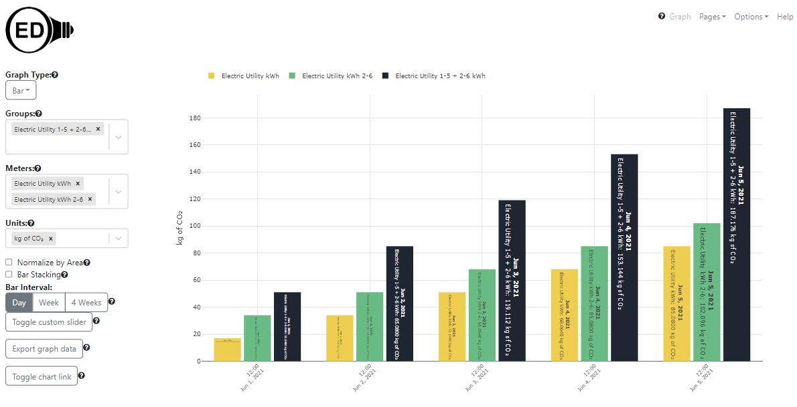
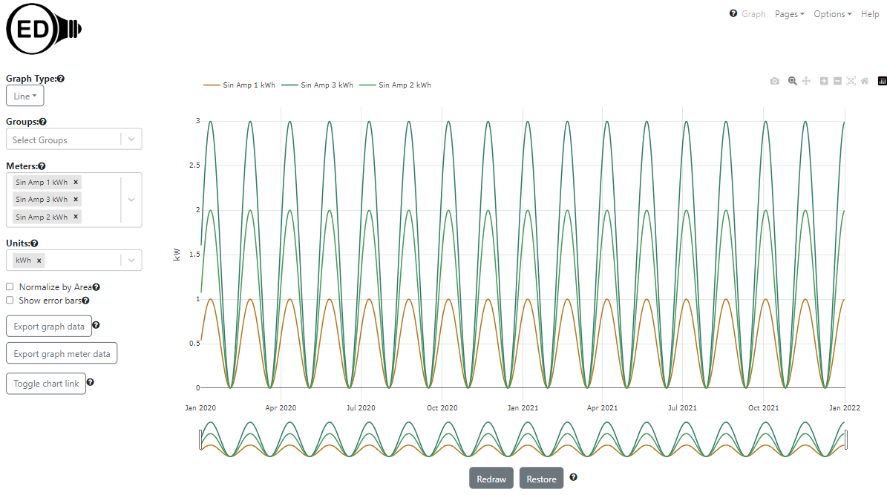
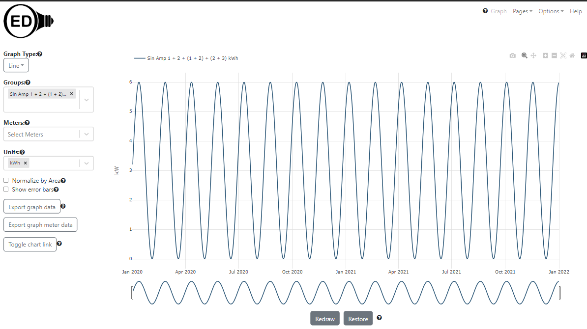
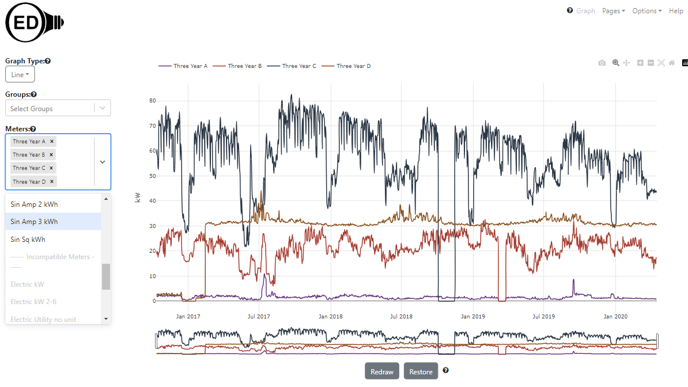

OED Developer Documentation
Test Data
Documentation overview
Developer documentation
Information
Starting
Codebase Info
Further Details
Version Release
This information is for developers of the OED software so this information is not usually of interest to a general user.
The update to the Redux Toolkit (RTK) is not yet reflected in the documentation. As a result, some information may be out of date.
Developers want to have test meter data for OED development that is consistent, stable and does not require having access to actual meters. This describes how to get and load such meter test data along with related groups, units & conversions.
Prerequisites
What follows assumes you have a properly installed and working OED but have not yet loaded in the reading data described here. If they have already been loaded then the loading step for that meter will be skipped. At a minimum you should be able to see the main OED page in a web browser (normally URL of localhost:3000). Normally the database is automatically created and works fine. If you get errors about the database then you need to address them before you can do this or get the test data in (if you get errors during this process).
Inserting the standard OED test data
The simple and mathematical test data is created in OED by doing the following (they are described later):
- Make sure you have OED running so it is available to do the necessary work.
- Open a terminal in the web/vsc Docker container by right clicking on the web container in the Docker extension of VSC and attaching a shell. (Described in the getting started directions)
- In the terminal, run the command
npm run testData. This may take a few minutes but when it completes there should be new meters with data, new groups, the DB structures are all updated and the CSV files used will be removed unless there was an error. This generates all the standard test data except the one where readings are every minute since that is a large dataset that is less frequently used. See the next step before you can use the new OED information within the OED web page. - As we update OED pages, the code is avoiding reloading Redux state every time. Thus, to see all the changes in Redux state and to get the array for graphing units, you need to reload an existing OED web page. Once done you should see all the test meters/groups and data as described below. If this does not happen then an error likely occurred so carefully look at the output in your terminal that you used above.
If you only want to load some of the data (not the common usage), you can look at package.json for the individual commands to insert the mathematical data. The others are so small/fast that they are done as above. See Mathematical test data section below.
Comparison data
When you do a compare graph, you choose how far from current time you compare. As a result, you need current readings and ones immediately before that time to get data for the comparison graph. If you are using meter data that does not have this, you will need to create it. Here is how to do it:
- Get the timezone of your local machine (not the Docker container for OED) by doing this in the terminal:
date +%Z. For what follows the timezone is assumed to be CDT but you should change if your timezone differs. - If you want to be extra careful, check the time in Postgres. Open a Postgres terminal by attaching a shell to the database container in a similar way to how you did it above for the web container. Once inside the database shell, do:
psql -U oedto access the database terminal and do the following within this terminal. Verify timezone is correct by doing:select clock_timestamp() at time zone 'CDT';. Make sure that it shows the same time as on the clock on your computer that you found in the previous step and replace CDT with the timezone using. You can now quit postgres by doing:\q - Open a terminal by attaching a shell to the OED web container as was done earlier in this file.
- In the web terminal do:
node -e 'require("./src/server/util/developer.js").shiftReadings("meter name", "CDT")'
Where "meter name" is replaced with the meter you want to shift and still use the double quotes. Similarly, CDT should be the timezone found above. The console will show (the shift value will be different):shifting meter "meter name" to timezone "CDT" The readings were shifted by: 10 days refreshing all views since readings changed [INFO@2023-10-03T02:05:08.194+00:00] Refreshing All Reading Views... [INFO@2023-10-03T02:05:08.196+00:00] Refreshing Materialized Daily Reading Views [INFO@2023-10-03T02:05:08.197+00:00] Refreshing Materialized Hourly Reading Views [INFO@2023-10-03T02:05:14.231+00:00] Daily View Refreshed [INFO@2023-10-03T02:05:19.900+00:00] Materialized Hourly View Refreshed [INFO@2023-10-03T02:05:19.902+00:00] ...Views Refreshed!
- If you don't want to refresh the readings (then cannot graph the new data but useful if shifting lots of meters until the last one) then add a third parameter of false:
node -e 'require("./src/server/util/developer.js").shiftReadings("meter name", "CDT", false)' - You need to refresh the web page with OED to see the new compare values of shifted data.
This process can be repeated as often as desired to keep the readings current. If you give an incorrect meter name that does not exist then an error similar to the following will appear:
[ERROR@2023-10-02T22:56:40.591+00:00] Unhandled Promise Rejection: TypeError: Cannot read properties of null (reading 'humanize') Stacktrace: TypeError: Cannot read properties of null (reading 'humanize') at Object.shiftReadings (/usr/src/app/src/server/util/developer.js:36:71) at process.processTicksAndRejections (node:internal/process/task_queues:95:5) (node:288) PromiseRejectionHandledWarning: Promise rejection was handled asynchronously (rejection id: 1) (Use `node --trace-warnings ...` to show where the warning was created)
The following figure shows the result after shifting the three amp meters to current time and then doing a comparison graphic for 1 week. There is no difference between the meters since they all have the same shape and only scaling of the readings.
Map data
The following assumes you have loaded the test data into your development OED system. You can use other meter data if you prefer.
Please use the admin map creating documentation for information on how to load and calibrate a map. This page only describes the necessary details of the test map. You need to be logged in as an admin to complete these steps.
Use the sample Happy Place map by downloading it. This is the map you upload into OED. We will call it "Happy Place" and you can use that name in OED or some other name. The map angle is 0.0 degrees.
{kind=link}
During the calibration step, you will use a mythical GPS coordinate system of (0-30, 0-50) which are real GPS values but not usual for a map. This large area works because we will make a perfect calibration with no error. This means the lower, left corner of the map has GPS coordinate (0, 0) and the top, right has GPS coordinate (50, 30). The Plotly grid has values of (0, 0) for lower, left and (300, 500) for the top, right. This means the coordinates are reversed for GPS (latitude, longitude) compared to the grid (x, y) and are a factor of 10 smaller. During calibration, click on three places on the map. In principle it does not matter where but three spread out places on the map is better normally. When you do that, OED will show the grid coordinate you clicked on. As just explained, you need to reverse the coordinates and divide by 10. Thus, if you are told "input GPS coordinate that corresponds to the point: x: 277, y: 461 in this format -> latitude,longitude" then you enter "46.1, 27.7" for the GPS value in the box and submit. Repeat this 3 times and you should then see an error of 0% for both directions. If not, start over. If yes, then save changes to the database.
The following meters and groups will automatically be placed at these locations:
- Sin Amp 1 kWh at Play Place
- Sin Amp 2 kWh at Swimming Pool
- Sin Amp 1 kWh at Theater
- Sin Amp 1 + 2 kWh (group) at Cafeteria
- Sin Amp 2 + 3 kWh (group) at Housing
If all went well, you should now see the following on the map page.
Rotated map
Sometimes you want to test a rotated map. In this case use Happy Place 30 Deg map that was rotated by 30 degrees. This does not impact the GPS coordinates but means the simple correspondence between the OED grid and GPS no longer holds. During calibration, use these points:
{kind=link}
- Bottom, right of Swimming Pool at coordinate 265, 342 with GPS value of 39.5, 27.7
- Bottom, right of Theater at coordinate 217, 234 with GPS value of 23.7, 29.3
- Bottom, right of Cafeteria at coordinate 85, 252, with GPS value of 17.0, 12.7
This will give: result: x: 3.127%, y: 0.647%. If you switch to this map then you should see the following Where items are shown at the same location but the map is rotated. 
Simple Test Data
Meter data
The simple/basic test data is not representative of real meter data nor mathematical but it is easy to use. Each meter has readings for five days and the line graphs should be a straight line. The following table gives the expected values for the line graphs for all units for these simple meters where NA indicates that unit is not allowed/not compatible. The item for each meter/row that is marked with a * indicates the default graphic unit if one is not already selected. All values are for per hour for the rate. Note kW and kWh are not impacted by a rate change. The Gallon and Gallon flow are available for testing the rate choices.
The table also contains the mathematical test data in the lower part.
| Meter name | Dates | Notes | kWh | BTU | MJ | M3 Gas | 100 W bulb | US Dollar | Euro | kg | Metric ton | kg of CO2| Metric ton of CO2 | Fahrenheit | Celsius | kW | Gallon | Liter | Gallon per minute | Liter per hour | Electric Utility kWh | 6/1-5/2021 | graphs as raw meter data | 1 - 5* | 3412.08 - 17060.4 | 3.6 - 18 | 9.32e-2 - 0.466 | 1-5 | 0.115 - 0.575 | 0.1012 - 0.506 | NA | NA | 0.709 - 3.545 | 7.09e-4 - 3.545e-3 | NA | NA | NA | NA | NA | NA | NA | Electric Utility kWh not displayable | 6/1-5/2021 | graphs as raw meter data; only if admin | 1 - 5* | 3412.08 - 17060.4 | 3.6 - 18 | 9.32e-2 - 0.466 | 1-5 | 0.115 - 0.575 | 0.1012 - 0.506 | NA | NA | 0.709 - 3.545 | 7.09e-4 - 3.545e-3 | NA | NA | NA | NA | NA | NA | NA | Electric Utility kWh 2-6 | 6/1-5/2021 | graphs as meter data | 2 - 6* | 6824.16 - 20472.48 | 7.2 - 21.6 | 0.186 - 0.559 | 2 - 6 | 0.23 - 0.69 | 0.2 - 0.6 | NA | NA | 1.418 - 4.254 | 1.418e-3 - 4.254e-3 | NA | NA | NA | NA | NA | NA | NA | Electric Utility kWh in BTU | 6/1-5/2021 | graphs as meter data | 1 - 5 | 3412.08 - 17060.4* | 3.6 - 18 | 9.32e-2 - 0.466 | 1-5 | 0.115 - 0.575 | 0.1012 - 0.506 | NA | NA | 0.709 - 3.545 | 7.09e-4 - 3.545e-3 | NA | NA | NA | NA | NA | NA | NA | Electric Utility kWh in MTon CO2 | 6/1-5/2021 | graphs as meter data | 1 - 5 | 3412.08 - 17060.4* | 3.6 - 18 | 9.32e-2 - 0.466 | 1-5 | 0.115 - 0.575 | 0.1012 - 0.506 | NA | NA | 0.709 - 3.545 | 7.09e-4 - 3.545e-3* | NA | NA | NA | NA | NA | NA | NA | Natural Gas BTU | 6/1-5/2021 | graphs as meter data | 2.93e-4 - 1.465e-3 | 1 - 5* | 1.06e-3 - 5.27e-3 | 2.73e-5 - 1.36e-4 | 2.93e-4 - 1.465e-3 | 2.95e-6 - 1.48e-5 | 2.6e-6 - 1.3e-5 | NA | NA | 5.28e-5 - 2.64e-4 | 5.28e-8 - 2.64e-7 | NA | NA | NA | NA | NA | NA | NA | Natural Gas BTU in Dollar | 6/1-5/2021 | graphs as meter data | 2.93e-4 - 1.465e-3 | 1 - 5 | 1.06e-3 - 5.27e-3 | 2.73e-5 - 1.36e-4 | 2.93e-4 - 1.465e-3 | 2.95e-6 - 1.48e-5* | 2.6e-6 - 1.3e-5 | NA | NA | 5.28e-5 - 2.64e-4 | 5.28e-8 - 2.64e-7 | NA | NA | NA | NA | NA | NA | NA | Natural Gas Dollar | 6/1-5/2021 | graphs as meter data | NA | NA | NA | NA | NA | 1 - 5* | 0.88-4.4 | NA | NA | NA | NA | NA | NA | NA | NA | NA | NA | NA | Natural Gas Cubic Meters | 6/1-5/2021 | graphs as meter data | 10.7 - 53.4 | 3.64e4 - 1.82e5 | 38.5 - 192.3 | 1 - 5* | 10.7 - 53.4 | 0.11 - 0.55 | 0.97 - 4.84 | NA | NA | NA | NA | NA | NA | NA | NA | NA | NA | NA | Trash Kg | 6/1-5/2021 | graphs as meter data | NA | NA | NA | NA | NA | NA | NA | 1 - 5* | 1e-3 - 5e-3 | NA | NA | NA | NA | NA | NA | NA | NA | NA | Temp Fahrenheit 0-212 | 6/1-5/2021 | graphs as meter data | NA | NA | NA | NA | NA | NA | NA | NA | NA | NA | NA | 0 - 212* | -17.78 - 100 | NA | NA | NA | NA | NA | Temp Fahrenheit in Celsius | 6/1-5/2021 | graphs as meter data | NA | NA | NA | NA | NA | NA | NA | NA | NA | NA | NA | 0 - 212 | -17.78 - 100* | NA | NA | NA | NA | NA | Electric kW | 6/1-5/2021 | graphs as meter data | NA | NA | NA | NA | NA | NA | NA | NA | NA | NA | NA | NA | NA | 1 - 5* | NA | NA | NA | NA | Electric kW 2-6 | 6/1-5/2021 | graphs as meter data | NA | NA | NA | NA | NA | NA | NA | NA | NA | NA | NA | NA | NA | 2 - 6* | NA | NA | NA | NA | Water Gallon | 6/1-5/2021 | graphs as meter data | NA | NA | NA | NA | NA | NA | NA | NA | NA | NA | NA | NA | NA | NA | 1-5* | 3.79-18.93 | NA | NA | Water Gallon flow 1-5 per minute | 6/1-5/2021 | graphs as meter data | NA | NA | NA | NA | NA | NA | NA | NA | NA | NA | NA | NA | NA | NA | NA | NA | 1-5* | 227.12-1135.6 | Sin 4 Day kWh | 2020 | graphs as 4 day/raw meter | 0 - 3 sine* | 0 - ~10233 | 0 - ~10.8 | 0 - ~0.28 | 0 - 3 | 0 - ~0.35 | 0 - ~0.303 | NA | NA | 0 - ~2.13 | 0 - 2.13e-3 | NA | NA | NA | NA | NA | NA | NA | Sin 4 Hour kWh | 2020 | graphs daily but not less than 4 hour/raw if zoomed | 0 - 3 sine* | 0 - ~10233 | 0 - ~10.8 | 0 - ~0.28 | 0 - 3 | 0 - ~0.35 | 0 - ~0.303 | NA | NA | 0 - ~2.13 | 0 - 2.13e-3 | NA | NA | NA | NA | NA | NA | NA | Sin 15 Min kWh | 2020 | graphs daily | 0 - 3 sine* | 0 - ~10233 | 0 - ~10.8 | 0 - ~0.28 | 0 - 3 | 0 - ~0.35 | 0 - ~0.303 | NA | NA | 0 - ~2.13 | 0 - 2.13e-3 | NA | NA | NA | NA | NA | NA | NA | Sin 23 Min kWh | 2020 | graphs as daily | 0 - 3 sine* | 0 - ~10233 | 0 - ~10.8 | 0 - ~0.28 | 0 - 3 | 0 - ~0.35 | 0 - ~0.303 | NA | NA | 0 - ~2.13 | 0 - 2.13e-3 | NA | NA | NA | NA | NA | NA | NA | Sin 15 Min kWh | 2020 | graphs as daily | 0 - 3 sine* | 0 - ~10233 | 0 - ~10.8 | 0 - ~0.28 | 0 - 3 | 0 - ~0.35 | 0 - ~0.303 | NA | NA | 0 - ~2.13 | 0 - 2.13e-3 | NA | NA | NA | NA | NA | NA | NA | Sin Amp 1 kWh | 2020-21 | graphs as daily | 0 - 1 sine* | 0 - ~3402 | 0 - ~3.6 | 0 - ~0.093 | 0 - 1 | 0 - ~0.115 | 0 - ~0.101 | NA | NA | 0 - ~0.708 | 0 - 7.08e-4 | NA | NA | NA | NA | NA | NA | NA | Sin Amp 2 kWh | 2020-21 | graphs as daily | 0 - 2 sine* | 0 - ~6804 | 0 - ~7.2 | 0 - ~0.18 | 0 - 2 | 0 - ~0.23 | 0 - ~0.202 | NA | NA | 0 - ~1.42 | 0 - 1.42e-4 | NA | NA | NA | NA | NA | NA | NA | Sin Amp 3 kWh | 2020-21 | graphs as daily | 0 - 3 sine* | 0 - ~10206 | 0 - ~10.8 | 0 - ~0.28 | 0 - 3 | 0 - ~0.345 | 0 - ~0.303 | NA | NA | 0 - ~2.12 | 0 - 2.12-3 | NA | NA | NA | NA | NA | NA | NA | Sin Sq kWh | 2020 | graphs as daily | 0 - 2.5 sine* | 0 - ~8520 | 0 - ~9.0 | 0 - ~0.23 | 0 - 2.5 | 0 - ~0.29 | 0 - ~0.252 | NA | NA | 0 - ~1.77 | 0 - 1.77-3 | NA | NA | NA | NA | NA | NA | NA | Cos Sq kWh | 2020 | graphs as daily | 0 - 2.5 sine* | 0 - ~8520 | 0 - ~9.0 | 0 - ~0.23 | 0 - 2.5 | 0 - ~0.29 | 0 - ~0.252 | NA | NA | 0 - ~1.77 | 0 - 1.77-3 | NA | NA | NA | NA | NA | NA | NA | Cos 23 Min kWh | 2020 | graphs as daily | 0 - 3 sine* | 0 - ~10233 | 0 - ~10.8 | 0 - ~0.28 | 0 - 3 | 0 - ~0.35 | 0 - ~0.303 | NA | NA | 0 - ~2.13 | 0 - 2.13e-3 | NA | NA | NA | NA | NA | NA | NA | |
|---|
For bar graphs, you can easily check the day bars for the simple data. Wider bars will only show for data with more days as OED does not show bars with days missing at the start or end. The value can be found by taking the day value on the line graph (shown in the table above) and multiplying by 24. For example, Electric Utility kWh as kWh has line values of 1-5 and bar values of 24-120. In US Dollars it is 0.115 - 0.575 on line and 2.76-13.8 on bar. Tis is because it is 24 times larger as the sum over the 24 hours of the rate/day. This holds for both quantity and flow units.
If the custom slider is used and the bar width is 2 days then you get two bars: June 2-3 and Jun 4-5. The value is 120 (48 + 72) and 216 (96 + 120).
Group data
The following table gives groups that are created from the meters above as well as the mathematical meter data described below. All area units are sq. meters and not set/zero if left off.
| Group name | Default graphic unit | Values for default unit | area | Included meters | Included groups | All meters included | Compatible units | Note |
|---|---|---|---|---|---|---|---|---|
| Electric Utility 1-5 + 2-6 kWh | kWh | 3 - 11 | 10 | Electric Utility kWh, Electric Utility kWh 2-6 | none | Electric Utility kWh, Electric Utility kWh 2-6 | see Electric Utility kWh | |
| Electric Utility 1-5 + 2-6 Dollar | US Dollar | 0.345 - 1.265 | 10 | Electric Utility kWh, Electric Utility kWh 2-6 | none | Electric Utility kWh, Electric Utility kWh 2-6 | see Electric Utility kWh | |
| Natural Gas Dollar Euro | Euro | 0.88 - 4.4 | Natural Gas Dollar | none | Natural Gas Dollar | see Natural Gas Dollar | ||
| Electric Utility 1-5 + Natural Gas Dollar Euro | Euro | 0.9812 - 4.906 | Electric Utility kWh, Natural Gas Dollar | none | Electric Utility kWh, Natural Gas Dollar | see Natural Gas Dollar | ||
| Electric Utility 1-5 kWh not displayable | kWh | 1 - 5 | Electric Utility kWh | none | Electric Utility kWh | see Electric Utility kWh | This should only been seen and graphable by an admin | |
| Electric kW + 2-6 kW | kW | 3 - 11 | 100 | Electric kW, Electric kW 2-6 | none | Electric kW, Electric kW 2-6 | see Electric Utility kWh | |
| SqSin + SqCos kWh | kWh | very close to 2.5 | 10 | testSqSin kWh, testSqCos kWh | none | testSqSin kWh, testSqCos kWh | see Electric Utility kWh | |
| SqSin + SqCos no unit | none | same as above | testSqSin kWh, testSqCos kWh | none | testSqSin kWh, testSqCos kWh | see Electric Utility kWh | Will graph once a unit compatible with kWh is chosen | |
| Sin Amp 1 + 2 kWh | kWh | sine from 0-3 | 1000 | Sin Amp 1 kWh, Sin Amp 2 kWh | none | Sin Amp 1 kWh, Sin Amp 2 kWh | see Electric Utility kWh | |
| Sin Amp 2 + 3 kWh | kWh | sine from 0-5 | 1000 | Sin Amp 2 kWh, Sin Amp 3 kWh | none | Sin Amp 2 kWh, Sin Amp 3 kWh | see Electric Utility kWh | |
| Sin Amp 1 + (2 - 3) kWh | kWh | sine from 0-6 | 10000 | Sin Amp 1 kWh | Sin Amp 2 + 3 kWh | Sin Amp 1 kWh, Sin Amp 2 kWh, Sin Amp 3 kWh | see Electric Utility kWh | includes group |
| Amp 1 + 2 + (1 + 2) + (2 -3) kWh | kWh | sine from 0-6 | 10000 | Sin Amp 1 kWh, Sin Amp 2 kWh | Sin Amp 1 + 2 kWh, Sin Amp 2 + 3 kWh | Sin Amp 1 kWh, Sin Amp 2 kWh, Sin Amp 3 kWh | see Electric Utility kWh | includes 2 groups and 2 duplicate meters |
Mathematical Test Data
The OED test data generation code can generate sine and cosine based data. It has several advantages:
- You can create on your own machine without needing to download anything.
- The provided script will generate the data and load it into your OED database for use within the system.
- Since it has a regular pattern, it is often easy to see issues in graphed data.
- Different datasets can be used to focus on different types of testing.
Note that the values are shifted so the minimum is 0 since most meter data is like that. It is easy to use this data by following these steps
The following table gives a list of the available data and information about it. The meter name assumes you use the provided script to load the data. (If you want to generate the test data outside the usual script, the <command name> is what you use to create this dataset manually with npm run <command name> in a web/vsc Docker container terminal. You will then need to load the reading data into OED as described on the reading import page. The file will have the name indicated and is located in the src/server/test/db/data/automatedTests/ directory. It is important to properly set the reading frequency to see the expect result.) The meter name is the one if the testData script is used to create and load this data.
| Description | Meter name | # points/file size | | File produced |
|---|---|---|---|---|
| Sine function with a period of 45 days and amplitude 3 for 1 year with points every 4 days | Sin 4 Day kWh | 92 points/5kB | generateFourDayTestingData | fourDayFreqTestData.csv |
| Sine function with a period of 45 days and amplitude 3 for 1 year with points every 4 hours | Sin 4 Hour kWh | 2196 points/129kB | generateFourHourTestingData | fourHourFreqTestData.csv |
| Sine function with a period of 45 days and amplitude 3 for 1 year with points every 23 minutes | Sin 23 Min kWh | 22915 points/1.4MB | generateTwentyThreeMinuteTestingData | twentyThreeMinuteFreqTestData.csv. |
| Sine function with a period of 45 days and amplitude 3 for 1 year with points every 15 minutes | Sin 15 Min kWh | 35136 points/2.1MB | generateFifteenMinuteTestingData | fifteenMinuteFreqTestData.csv |
| Cosine function with a period of 45 days and amplitude 3 for 1 year with points every 23 minutes | Cos 23 Min kWh | 22915 points/1.4MB | generateCosineTestingData | 23FreqCosineTestData.csv |
| Sine squared function with a period of 45 days and amplitude 2.5 for 1 year with points every 1 day | Sin Sq kWh | 366 points/21kB | generateSineSquaredTestingData | 2.5AmpSineSquaredTestData.csv |
| Cosine squared function with a period of 45 days and amplitude 2.5 for 1 year with points every 1 day | Cos Sq kWh | 366 points/21kB | generateCosineSquaredTestingData | 2.5AmpCosineSquaredTestData.csv |
| Sine function with a period of 45 days and amplitudes 1-3 for 2 years with points every 15 minutes | Sin Amp 1 kWh, Sin Amp 2 kWh, Sin Amp 3 kWh | 70176 points/4.2MB each; 12.6MB total | generateVariableAmplitudeTestingData | 15Freq1AmpSineTestData.csv, 15Freq2AmpSineTestData.csv, 15Freq3AmpSineTestData.csv |
| Sine function with a period of 45 days and amplitude 3 for 1 year with points every 1 minute. This is normally used for specialized testing of a large number of readings and not automatically generated by the script. | Sin 1 Min | 527040 points/32MB | generateOneMinuteTestingData | oneMinuteFreqTestData.csv |
What OED should display with this test data
This section gives a range of samples of what OED will display when graphing the test data described above.Simple data
Quantity data
The following figure shows the kWh meters and groups as a line graph: 
The following figure shows the kWh meters and groups as a 1 day bar graph: 
OED will show a blank bar graphic in this case (and all the 5 day meters) for 1 or 4 weeks because it will not display bars with incomplete meter data at the start or end.
Same as the line graphic above but in kg of CO2 to show changing the unit: 
Same as above but as a 1 day bar graph: 
The following figure shows the water meter as a line graph where the rate is Day to show changing the rate and a different type of unit. Note KWh must be shown per hour. 
Flow data
The following figure shows the kW meters and groups as a line graph: 
The following figure shows the kW meters and groups as a 1 day bar graph:
The following figure shows the water flow meter as a line graph where the rate is Minute to show changing the rate and a different type of unit. Note kW must be shown per hour.
Raw data
The following figure shows a temperature meter that collects in Fahrenheit but has a default graphic unit of Celsius as a line graph: 
Mathematical data
The following picture shows the meters Sin 4 Day kWh, Sin 4 Hour kWh, Sin 23 Min kWh, Sin 15 Min kWh. It is designed to show how the number of points impact the line quality in OED and verify that varied reading rates do not impact the OED code. What you see is that the 4 day line is shifted due to the placement of the time values. The other meters are very similar in value. This shows that the daily averaging in OED is accurate. Note that in this and all line graphics, you will see the similar values as you zoom in to see hourly or meter level points. This is because the data is kW. The only change you will see is in the quality of the graphic if you zoom in so tight that you have limited points to graph. 
The following picture shows the same meters as above but as a bar graph with 4 week bars. In a perfect world, all the bars would have the same value for a given date range. As can be seen, there are small differences where the value varies more as the frequency of the readings goes down. This variation is due to the inaccuracy of low frequency readings as is normal. 
The following picture shows a line graphic of the sin values for the 3 different amplitudes (1-3). As expected, they have the same period with a different amplitude. Plus, it looks nice! 
The following picture shows a line graphic of a group containing all the sine amplitudes above but with 1 & 2 included twice. OED does not duplicate the values so the sum is a maximum of 6 or 1 + 2 + 3. 
The following picture shows a sin and cos with the same amplitude. It should be noted that normally sin and cos are phase shifted so the high of one is the low of the other. You do not see that because the values were shifted to all be positive. 
The following picture shows the meters Sin Sq kWh & Cos Sq kWh along with a group containing both meters (Sin Sq + Cos Sq kWh). If OED is working properly then the group should have a constant value since sin^2 + cos^1 = 1 or the value of the amplitude in this case. This is a good test of whether groups work (for simple groups of only two meters). If you want to see how accurate OED is then just graph this group and you will see that the value is always very close to 2.5. 
The following image shows sin with readings every minute. It is a very high quality version of the first picture with points that are less frequent. It is zoomed in to less than a day to show the minute points. This data is not automatically generated and is normally only used to test OED's speed when there is lots of reading points. You would need to generate this data (placed in src/server/test/db/data/automatedTests/oneMinuteFreqTestData.csv) and then upload via CSV as described for the real-world data. 
Real World Test Data
This data can show what happens with actual data. However, it is harder to see when things are off. It is provided as an alternative to the mathematical data but will probably be used less now that that data exists.
The table below lists the types of test data we have. The first four all have 3.5 years of electric data but for different meters so the values vary. The last one is a sample file that you can edit to create your own data.
| Description | Readings CSV | Size of Readings File |
|---|---|---|
| Contains actual electric data on an hourly basis for about 3.5 years (Oct. 2016-Apr. 2020) | threeYearA.csv | 1.3MB |
| Contains actual electric data on an hourly basis for about 3.5 years (Oct. 2016-Apr. 2020) | threeYearB.csv | 1.3MB |
| Contains actual electric data on an hourly basis for about 3.5 years (Oct. 2016-Apr. 2020) | threeYearC.csv | 1.3MB |
| Contains actual electric data on an hourly basis for about 3.5 years (Oct. 2016-Apr. 2020) | threeYearD.csv | 1.3MB |
| Sample file to edit for your own data | sampleReadings.csv | 0 MB |
Using the provided data
Choose the file you want where clicking on the link in a web browser will download that file. Note you can load as many test data files as you want into a single OED instance. The import of this data into OED uses the CSV import feature that is described in the CSV import documentation and pages linked from that page, esp. about readings. You do not need to know all those details but can get further information as needed.
Loading the data into your OED
You will want to have OED running during this process. Start it with Docker as you should have previously done. Log in as an admin user. Go to the CSV upload page using the "CSV" button in the top, right of the OED web page. You should default to the "Readings" tab which is what you want. Now do the following:
- Enter the meter name in the box where the sample graph below used the file name without the extension and spaces, e.g., "Three Year A" for the first file. You can use any name you like.
- Use the "Choose File" button to select the file with the reading data you are uploading.
- Check the "Create Meter" and "Header row" boxes.
- Check the "Refresh Readings" and "Refresh Hourly Readings" boxes so the readings will be available right away for graphing. You can delay doing this until the last upload if you are doing multiple readings files to make it a little faster. If you forget to do this then you must manually refresh the readings to graph them.
- Click the "Submit CSV Data" button to start the upload. This will take a little while (probably less than one minute). A popup window will appear when the upload is done telling you the status. It should be SUCCESS without any warnings if all went well. If something went wrong then address the issue. Note if there are lots of errors then you need to look at the log or console where OED is running to see them all.
- Reload the web page where OED is running to see the new meter(s).
- Go to the meter page and assign the unit and, if desired, the default graphic unit for each meter. The examples make them Electric_Utility for the unit and kWh for the default graphic unit. Also set the reading frequency to 01:00:00 or 1 hour since that is what the data represents.
- You should now be able to graph them.
Below is a line graphic with the four 3.5 year meters. If all went well then this is what you should see. 
If you don't see this then something is wrong and you should not continue this process and instead ask us for help. (See link at bottom of page)
Creating own data
You can download the sample data from the table above. You can edit the sampleReadings.csv file by opening it in you preferred editor where a spreadsheet program is fine as long as you make sure to save it as a CSV file. Remove the two sample readings on lines 2 and 3 of the file and create new lines with the data you want. Note that normally the end time of the previous point is equal to the start time of the next point in real meter data. You can put in as many lines as you want with readings. This file has a header row so it is easier to see what goes in each column. Once you are done editing and save the file in CSV format, import it the same way as the provided data above except you need to check the "Header Row" box since the file has a header row. Deal with any messages to correct problems and see the readings import page for more info on dealing with issues. Note if there are lots of errors then you need to look at the log or console where OED is running to see them all.
Database issue
If you cannot load the data into the database or it disappears after shutting down OED, then you likely have a database issue. To test you can do the following:
- Log in as the admin.
- Change the default graph type to something else (say bar) and save the change. Make sure it gives the green popup that it saved okay.
- Refresh the web browser and go tho the main OED page. It should have preselected the bar choice for graphic indicating that it is the default choice. If this does not work then verify the admin preference change was actually saved without error because it seems your installation is not saving to the database.
- Shut OED down and bring it back up.
- When OED is done installing, go to the web page and refresh the page. Again, you should see the bar as the default selection. If this fails then the database changes are not being saved between runs of OED. This indicates an install issue. If you don't know what to do then contact us.
Help
You should now be done and have the test data in your OED development system. If something did not work then you can seek help from the project by contacting us.